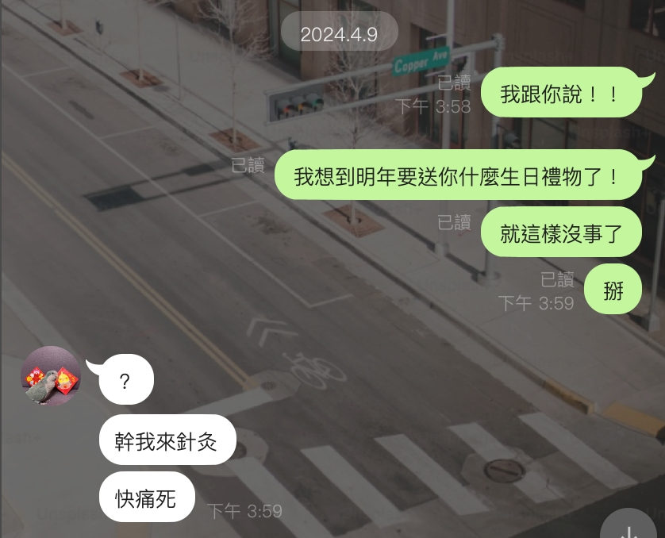

今年的禮物可能沒有去年那麼ㄅㄧㄤˋㄅㄧㄤˋＱＱ
⬆️這個禮物是去年四月的時候想到的，就是在那段時間到今年生日前聽到的歌，有想到你的，把它做成歌單送給你！
也不是說整首歌都想到你啦，是有些歌詞覺得蠻符合的！下面我整理了一些部分有符合個歌詞！
It's the most wonderful time of the year
這是一年中最棒的時光
第一首就用最簡單的歌來開場吧！
雖然是聖誕歌，但是你的生日就如同聖誕一般的氣氛一樣，讓人驚喜又期待！
Here's a candle for your birthday cake
There's a wind for the wish you make
Here's a map for the road you're on
You need a map cos' the road is long
這裡是給你生日蛋糕用的蠟燭
將會有風來迎接你許下的願望
這裡是你所在路途上的地圖
你需要它是因為路還很長
第二首是個生日歌，Noel Gallagher的寫生日歌！（對不起了今年沒有鄭容和你老公🙏）
還有，是的！接下來的路還很長，如果不知道怎麼走的話，我來當你的地圖吧！我會盡全力指引你的！
如果我無法勝任當地圖的話，我來當你的手電筒吧！
如果手電筒也不行的話，就讓我默默陪著你吧！！有需要時我隨時都在哦！
I can't sleep tonight
Everybody saying everything's alright
Still I can't close my eyes
I'm seeing a tunnel at the end of all these lights
Sunny days
Where have you gone?
我今天晚上睡不著
大家都說一切都會沒事的
但我還是無法閉上我的雙眼
我看見這些燈光盡頭有一條隧道
美好的天氣啊
你都去哪了？
這首歌有那麼一點點的悲傷感，歌詞裡的睡不著實在是太符合你了！
最近比較少跟你聊天，所以也不知道你失眠的狀況有沒有改善，如果有改善的話，太好了！不要天天夢到我哦😏
如果沒有的話，我來唱安眠曲給你聽！太難聽的話我來唸故事給你聽！一定要讓你睡著，睡香香！睡得比全世界都香！
還有這歌的淡淡悲傷感也讓我覺得很符合你，有種悲傷小少女的感覺（？）
There is no reason to feel bad
But there are many seasons to feel bad, sad, mad
It's just a bunch of feelings that we have to hold
But I am here to help you with the load
-
So now we're here and now is fine
So far away from there and there is time, time, time
To plant new seeds and watch them grow
So there'll be flowers in the window when we go
心情不好不需要什麼原因的
但是還是有很多時候會感到很糟糕、難過、生氣
這些都是我們必須承受的一些情緒
但我是來這裡幫你一起承擔的
-
現在我們在這裡，所有事都安然無恙
到達終點還有段距離，不過我們還有時間
來種下新的種子，看著他們成長
所以當我們啟程時，就會看到窗外的花朵
這首歌，跟上一首一樣，不過這次帶更多一點希望感
我沒記錯的話，寫這首歌的人，也就是主唱，說這是一首關於一段關係成長的歌，不管是友情愛情還是親情
而窗外那朵花，正是那段關係的樣子
我想我們應該已經種下那些種子了吧！現在的我們感覺應該是等著他開花？還是已經開了呢🤔
This is the story of a girl
Who cried a river and drowned the whole world
And while she looks so sad in photographs
I absolutely love her
When she smiles
這是個關於一個女孩的故事
一個哭出了一條河，把整個世界都淹了的那個女孩
雖然她在照片裡看起來很難過
但我還是很愛他
尤其是他笑的時候
真的很糟糕，感覺在我的淺意識裡，你就是個很難過很難過很無助很需要陪伴的人！
但是這段歌詞我是真的覺得蠻符合你的哈哈ㄚ。照片裡看起來很難過，應該是沒有啦，應該是比較兇？
兇兇本人⬇️（但他其實人很好，有顆愛動物的心❤️）
不過沒關係！不管是兇的還是笑的還是難過的還是醜的我都會愛你的！
Well, happy birthday, baby
Everybody's here for you
Happy birthday, baby
Six candles lighting up the whole room
Outdated kitchen full of smiles
Everyone's standing 'round
We take pictures so we remember who we are
Twenty-five years from now
-
You hide your heartbeat in a box under the bed
But it makes too much noise down there
So you swallow it up instead
And now a pounding headache keeps you awake
As you daydream through the night
We take pictures so we remember who we are
生日快樂（寶貝太噁心了我不行）
大家都在這裡給你慶生
（不要再寶貝了😭）
六根蠟燭點亮了整個房間
老舊的廚房裡充滿著微笑
每個人都在那裡
我們拍照是為了記住25年後的我們是誰
-
你把你的心跳藏在你床下的盒子裡
但它又卻如此吵雜
所以你決定把它吞進去
然而現在你又因為頭痛欲裂，無法入眠
整夜做著白日夢
我們拍照是為了記住我們是誰
最後一首！我覺得它還蠻適合當close song的！
這首我覺得很酷，因為裡面有提到'25 years from now'...也剛好是你的25歲生日！！
再來就是這首歌的標題又是"The girl with no smile"對應到了上一首歌，再一次對不起了ＱＱ
我的淺意識真的覺得你太悲傷了，你到底是不是有smile的girl呢？
不過也像"Flowers In The Window"那首歌提到的，你願意的話，我會跟你一起承擔的！
現在我回頭看看這些歌，沒有當初我想設計的那樣，反而是有一半都是生日歌😭 但是唱愛情的歌真的太多了！友情的歌真的不容易！
好了，這就是我今天送給你的生日禮物，我已經沒招了，明年也沒有歌單了...👀
最後來些生日祝福吧：
生日快樂！金晶的媽咪（還有阿布、還有你手機封面那隻小女森我忘記名字了ＱＱ有個天字嗎？天天？）！ 25了已經是阿姨了，少女阿姨，對待事情已經不能再跟以前一樣無憂無慮了嗚嗚，但是！路還很長！不能跟以前一樣那又怎樣！ 未來的你才是你該專注的！現在你可能覺得自己很廢，才怪！你才不廢！在我眼裡，你可是堅強（又善良）的女人！ 你一個人帶著鳥鳥離開家鄉呢！這很像什麼，電影裡面追尋夢想的女主角，你已經跨出你的第一步了！這是一個勇敢的舉動，也是我很敬佩的！ 所以千萬不要覺得自己一事無成，你已經有了一個很棒的開始，雖然接下來要走的路還很長，途中可能也會有各種障礙，但你可是堅強了人呀！別小看自己了！ 能征服恐怖鳥鳥的人，還能怕些什麼呢！ 好啦！剩下的話留給明年說了，生日快樂，希望你的25歲可以是充滿有意義的一年記得許願<3